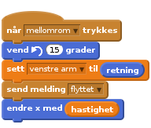
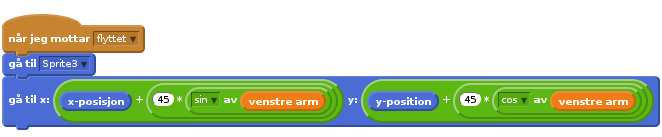

Nivå 4
Scratchkort - Hengslede armer
retning til armen i en variabel (mer om det seinere).

Først oppdaterer armen seg, når meldingen flyttet blir sendt, men du kan bruke hvilken som helst melding, så lenge overarmen sender den eller flytter seg til samme medling som underarmen.
Så flytter underarmen seg selv til senterpunktet av overarmen, dette er punktet hvor toppen av overarmen er festet til skulderen. Vi vil så flytte underarmen slik at den møter overarmen. Tenk deg at vi tegner en sirkel mens overarmen roterer rundt skulderen, hva er så radius på den sirkelen? Armen i dette eksempelet er circa 45 pixler lang. Vi trenger å finne ut hva punktet i den andre enden av armen er, og posisjonerer underarmen vår der. Man kan bruke trigonometri formelen over for å reposisjonere underarmen og lage en albue.